Processo de Importação - Abas
Aba Processo
A aba de Processos contém as seguintes funcionalidades a serem realizadas para a importação do tipo “Direta”:
Importar pedidos
Adiantamento Fornecedor
Adiantamento Despachante
Invoice
N.F. Nacionalização
N.F. Transporte
Recebimento de mercadorias
Despesas Importação
N.F. Complementar
Fechamento Numerário
Conciliação de importação
Fechamento de importação
{kind=link}
Para o processo do tipo “Conta e Ordem”:
Importar pedidos
Adiantamento Fornecedor
Adiantamento Despachante
Invoice
LCM de Desp. Nac.
Recebimento de mercadorias
Despesas Importação
Fechamento Numerário
Conciliação de importação
Fechamento de importação
{kind=link}
Todos os processos terão que ser executados na sequência correta para seu funcionamento adequado, estas funcionalidades serão explicadas em cada funcionalidade dos botões.
Aba Itens
A aba Itens será carregada com as informações das linhas do Pedido de compra selecionadas na tela Importar documentos.
 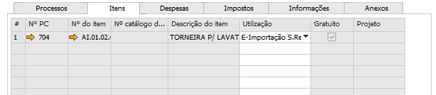
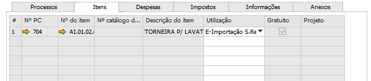
{kind=link}
Nº PC: É o número do pedido de compra selecionado na tela Importar documentos.
Nº do item: É o código do item selecionado na tela Importar documentos.
Nº catálogo do PN: É o número do catálogo do PN cadastrado na tela Números de catálogo de parceiros de negócio para o item/fornecedor.
Descrição do item: É a descrição do item, de acordo com seu código.
Utilização: É a utilização do item no Pedido de compra.
Gratuito: Será carregado de acordo com o campo Gratuito (parceiro de negócios) do pedido de compra, se a versão do SAP for a partir da versão 9.1. Caso seja uma versão anterior a 9.1, o campo se chamará Só imposto e o campo carregado será o campo Só imposto do pedido de compra.
Projeto: Esse campo terá o valor do campo Projeto da linha do pedido de compra. Esse campo também será levado para o campo Projeto da NF de Entrada (N.F.Nacionalização)
Quantidade: É a quantidade digitada na tela Importar documentos, ao selecionar as linhas e os pedidos de compra.
Código da UM: É o código da UM selecionado no pedido de compra.
Nome da UM: É o Nome da UM selecionado no pedido de compra.
Itens por unidade: É o valor encontrado no campo Itens por unidade de compra, no cadastro do item, aba Compra.
Preço unit.(ME): É preenchido com o campo Preço unitário do pedido de compra.
% do desc.: É preenchido com o campo % do desconto do pedido de compra.
Preço após desc.(ME): É preenchido com o campo Preço após desconto do pedido de compra.
Peso do PC: O campo Peso do PC será preenchido de acordo com o valor do campo Peso no pedido de compra.
UN Peso do PC: O campo UN Peso do PC será preenchido com a unidade de peso informada no pedido de compra.
Peso unit.: O campo Peso unit. será calculado de acordo com a configuração escolhida na tela Configurações Importação
Exemplo: O tipo de UN Medida configurado é Onça.
{kind=link}
Na tela Peso encontrada no menu:
Administração -> Configuração -> Estoque -> Peso
A conversão de oz para mg é 28.300.
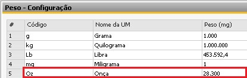{kind=link}
O peso do Pedido de compra é 22,5 Kg.
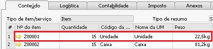{kind=link}
Então, como no pedido de compra o peso está em Kg, será utilizada essa unidade para conversão, conforme valor na tela Peso.
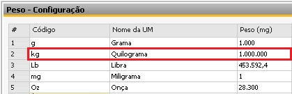A fórmula do campo Peso unit. é a seguinte:
Peso unit. = (Peso do Pedido / Quantidade Linha) * Unidade do Peso no PC / Unidade Config. Import
Peso unit. = (22,5 / 15) * 1.000.000 / 28.300
Peso unit. = 53,00353356890459

Peso total: O campo Peso total é calculado baseado no campo Peso unit., com a fórmula:
Peso total = Peso unit * Quantidade
Peso total = 53,00353356890459 * 15
Peso total = 795,05

É possível editar o campo “Peso total”, a edição dele irá alterar proporcionalmente o valor do campo “Peso unit.”.
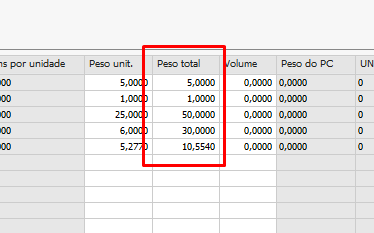{kind=link}
Após a adição da NF de Nacionalização o campo “Peso total” estará bloqueado para alteração.
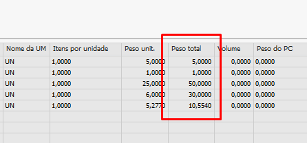{kind=link}
Volume: O campo Volume é preenchido de acordo com o campo Volume do cadastro do item, aba Compra.
NCM: O campo NCM é preenchido de acordo com o campo NCM do cadastro do item, aba Geral.
Preço Unit.(MC): O campo Preço Unit.(MC) é calculado baseado nos campos Preço após desc.(ME), Despesas de Invoice, Quantidade e Taxa de câmbio com a fórmula:
Preço Unit.(MC) = (Preço após desc.(ME) + (Despesas de Invoice / Quantidade)) * Taxa de câmbio
Preço Unit.(MC) = (3,45 + (8 / 15)) * 2
Preço Unit.(MC) = 7,97
Quantidade e Preço após desc.(ME)
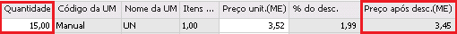{kind=link}
Despesas de Invoice
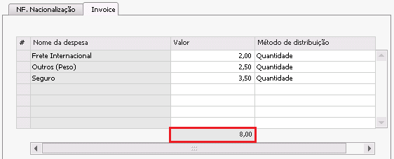{kind=link}
Valor CIF (MC)
Este campo é composto pelo cálculo:
Valor total (MC) + Despesas Custo (MC) + Despesas de Invoice (ME) (convertido em real)
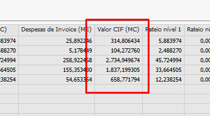{kind=link}
Este campo tem como objetivo facilitar o processo de validação da DI, onde o cálculo aduaneiro é exatamente o resultado do cálculo acima.
Taxa de câmbio
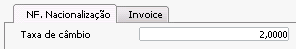{kind=link}
Preço Unit.(MC)
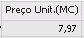{kind=link}
Valor Total (MC): O campo Valor Total (MC) é calculado baseado no campo Preço Unit.(MC), com a fórmula:
Valor Total (MC) = Preço Unit.(MC) * Quantidade
Valor Total (MC) = 7,966666666666667 * 15
Valor Total (MC) = 119,50
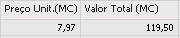{kind=link}
Despesas Custo (MC): O campo Despesas Custo (MC) é calculado baseado nas despesas da aba NF. Nacionalização cujo Método de distribuição seja diferente de Nenhum e as despesas não sejam do tipo Despesa adicional e no campo Quantidade, com a fórmula**:**
Despesas Custo (MC) = (Qtde da linha * Total das despesas) / Soma das quantidades**
Despesas Custo (MC) = (1 * 2) / 56 = 0,0357142857142857 = 0,04
Despesas Custo (MC) = (5 * 2) / 56 = 0,1785714285714286 = 0,18
Despesas Custo (MC) = (50 * 2) / 56 = 1,785714285714286 = 1,78
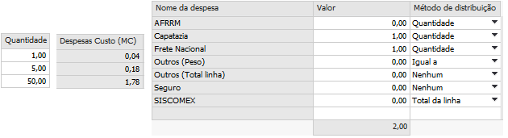{kind=link}
Também será considerado o Método de distribuição da despesa. Mais detalhes, verificar no tópico Detalhes dos cálculos dos rateios.
Despesa de Invoice: Esse campo será calculado ao clicar no botão Rateio na aba Despesas > Invoice. Os detalhes do cálculo estão nos tópicos Rateios de Invoice e de NF Nacionalização e Detalhes dos cálculos dos rateios.
Despesa 1: Para definir o valor dessa coluna, será considerado o tipo de despesa marcado como Despesa adicional 1 no campo Despesas adicionais da linha da tela Despesas adicionais.
Despesa 2: Para definir o valor dessa coluna, será considerado o tipo de despesa marcado como Despesa adicional 2 no campo Despesas adicionais da linha da tela Despesas adicionais.
Despesa 3: Para definir o valor dessa coluna, será considerado o tipo de despesa marcado como Despesa adicional 3 no campo Despesas adicionais da linha da tela Despesas adicionais.
Despesas de Importação: É calculado na hora que o processo Despesas Importação é realizado. Para calcular esse campo, é necessário utilizar os valores da coluna Valor total Final (MC).
A fórmula utilizada é:
(Valor total Final (MC) / Soma Valor total Final (MC)) * Soma dos custos das despesas de importação.
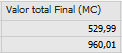 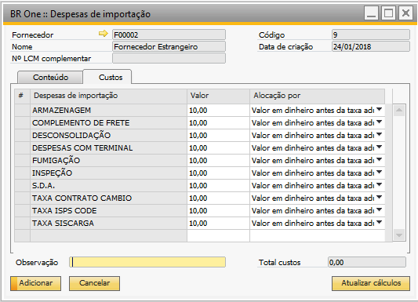{kind=link}
Conforme exemplos acima, a fórmula ficará para a linha 1:
(529,99 / 1.490) * 100 = 35,57
(960,01 / 1.490) * 100 = 64,43
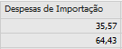{kind=link}
Onde:
Valor total Final (MC) = linha atual
Soma Valor total Final (MC) = soma das linhas = 529,99 + 960,01 = 1.490
Soma dos custos das despesas de importação = soma dos valores da despesa = 10 linhas * valor 10 = 100
Valor total Final (MC): O campo Valor Total Final (MC) é calculado baseado nos campos Preço Unit.(MC), Quantidade, Despesas Custo (MC), Despesa 1, Despesa 2, Despesa 3 e Despesas de Importação com a fórmula:
Valor Total Final (MC) = (Preço Unit.(MC) * Quantidade) + (Despesas Custo (MC) + Despesa 1 + Despesa 2 + Despesa 3 + Despesas de Importação)
Valor Total Final (MC) = (20 * 10) + (1,67 + 0,33 + 0,33 + 0,50 + 0)
Valor Total Final (MC) = 200 + 2,83 = 202,83
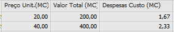 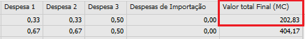{kind=link}
{kind=link}
Valor unit. Final (MC): O campo Valor unit. Final (MC) é calculado dividindo o campo Valor Total Final (MC) pela Quantidade.
Valor unit. Final (MC) = 202,83 / 10 = 20,28
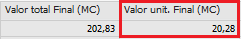{kind=link}
Fator custo: O campo Fator custo é calculado dividindo o campo Valor Total Final (MC) pelo Valor Total (MC).
Fator Total = 20 / 20 = 1,00


Texto livre: O campo Texto Livre é preenchido de acordo com o campo Texto Livre do pedido de compra.
{kind=link}

Rateio de despesas: Campo adicionado a fim de facilitar a consulta aos rateios, logo, ao clicar em “Detalhes” será aberto a tela “Detalhes do Rateio”, no qual mostra de forma sucinta os rateios da Nacionalização e da Invoice.
{kind=link}
Aba Despesas
A aba Despesa armazena os dados das despesas e suas configurações, essas informações são obtidas da tela Despesas adicionais.
Nesta aba, é possível que sejam definidos os pagadores padrões a cada imposto determinado e o método de distribuição, fazendo com que no momento de LCM de ajuste, já sejam definidas as contas do razão corretamente.
A tabela que aparecerá contém os seguintes elementos:

Existem duas abas para processos diferentes, sendo respectivamente para Nacionalização (despesas marcadas no campo Etapa de Importação como N.F. Nacionalização) e Invoice (despesas marcadas no campo Etapa de Importação como Invoice).
Na aba de Nacionalização e Invoice temos:
Taxa de câmbio (Somente na aba de Nacionalização): Campo para realizar a conversão da taxa de câmbio da despesa para moeda estrangeira.
Nome da despesa: Aqui serão listadas todas as categorias de impostos cadastradas no sistema.
Valor: De acordo com o valor referente às Notas Fiscais de Entrada, o sistema automaticamente recupera os cálculos das nacionalizações já inseridas.
Método de distribuição: -Validar-
Pagador Padrão (Somente na aba de Nacionalização): Aqui você poderá definir o pagador padrão para cada imposto. Existem duas opções disponíveis:
(0) - Próprio/CC
(2) – Despachante
Considera no fechamento numerário: Campo somente leitura, no qual exibe a flag desta configuração da despesa do sistema.
Despesas paga pelo fornecedor: Campo define quais itens terão suas despesas paga pelo fornecedor.
Essa funcionalidade permite que uma ou mais despesas de INVOICE sejam pagas pelo fornecedor. Esses custos servirão como base para os cálculos de nacionalização e, posteriormente, serão retirados do estoque, pois já foram pagos pelo fornecedor na origem.
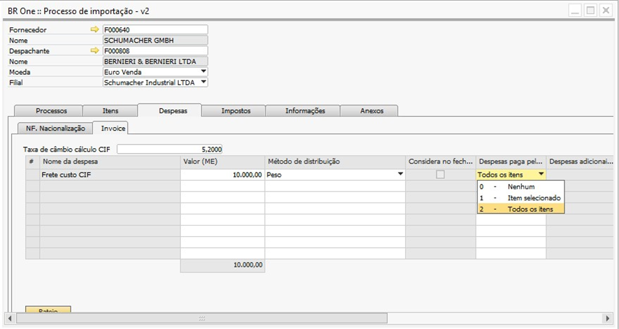{kind=link}
Para o correto funcionamento do processo, seguir o processo abaixo:
Existem 3 opções de configuração:
Nenhum: O processo continua sem alteração.
Item selecionado: Será possível definir um item estocável ou não estocável, gratuito ou não gratuito. Que terá o “Valor unitário do rateio” multiplicado pela quantidade da linha da nacionalização adicionada.
Para os itens estocáveis, gratuitos e não gratuitos:
Será gerado uma reavaliação de estoque, para que o valor proporcional da despesa seja retirado do custo de estoque. Onde será debitado o valor da “Conta transitória de estoque” e creditado na “Conta de estoque.”
Para Itens não estocáveis, gratuitos e não gratuitos:
Será gerado um LCM, para que o valor proporcional da despesa seja retirado. Onde será debitado o valor da “Conta transitória de estoque” e creditado na “Conta de estoque.”
Todos os itens: Ocorrerá o mesmo processo citado acima, porém, para todos os itens vinculados ao processo.
Para analise dos documentos criados no processo de Despesas paga pelo fornecedor, foi adicionado os campos “Reavaliação de estoque - Desp. Pagas pelo Fornecedor” e “LCM - Desp. Paga pelo Fornecedor” na tela de “Detalhes - N.F. Nacionalização”.
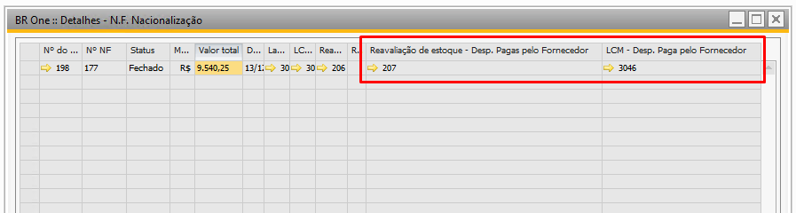{kind=link}
Despesas adicionais da linha: Campo somente leitura, no qual exibe a configuração da despesa do sistema.
Nível rateio de importação: Campo somente leitura, no qual exibe a configuração da despesa do sistema.
Despesa excluída do rateio: Campo somente leitura, no qual exibe a flag desta configuração da despesa do sistema.
Total MC menos despesas excluídas: Campo somente leitura, no qual exibe a flag desta configuração da despesa do sistema.
Ao clicar no botão Atualizar despesas os campos das despesas serão atualizados.
E ao clicar no botão Rateio os valores das despesas adicionais serão inseridos nos itens, e serão levados para o valor total da Invoice ou para o documento de Nota Fiscal de Nacionalização.
Aba Imposto

A aba Imposto armazena os dados dos impostos e suas configurações, semelhante à tabela existente para as despesas adicionais. Isso permite que sejam definidos os pagadores padrões a cada imposto determinado, fazendo com que no momento de LCM de ajuste, já sejam definidas as contas do razão corretamente.
Para o processo de importação do tipo “Conta e ordem”, o campo “Valor do Imposto”, será editável, para que o usuário informe os valores de impostos usados no processo de importação.
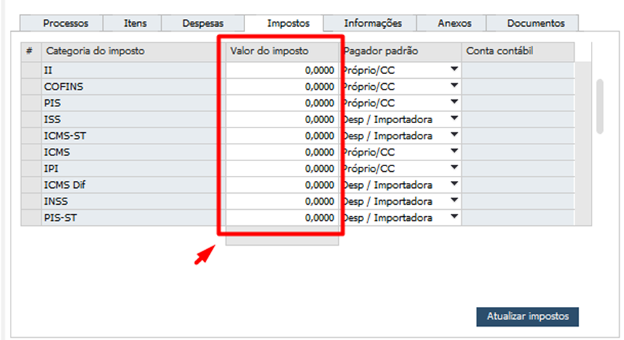{kind=link}
Nessa aba, você tem acesso a todas as informações referentes aos impostos da nacionalização. Os seguintes elementos estão disponíveis:
Nome do Imposto: Aqui serão listadas todas as categorias de impostos cadastradas no sistema.
Valor dos Impostos: De acordo com o valor referente às Notas Fiscais de Entrada, o sistema automaticamente recupera os cálculos das nacionalizações já inseridas.
Pagador Padrão: Aqui você poderá definir o pagador padrão para cada imposto. Existem três opções disponíveis:
(0) - Próprio/CC
(1) - Próprio/PN
(2) – Despachante
Ao acionar o botão Atualizar Impostos, os impostos e seus pagadores padrões serão exibidos na tela, as opções são buscadas da tela Categoria de Impostos levando em consideração o imposto selecionado. O usuário tem a flexibilidade de alterar o pagador padrão, se necessário.
Aba Informações
A aba Informações terá diversos campos para controle de todo o processo de importação, mas eles serão somente informativos, sem nenhuma obrigatoriedade.

Aba Anexos
Na aba Anexos é possível inserir arquivos ao processo de importação, semelhante à aba Anexos do SAP.

- Aba “Documentos”
Sub aba “Compras”
- Na aba “Documentos”, sub aba “Compras”, poderá ser vinculados documentos do tipo:
Pedido de compras;
Nota fiscal de entrada;
- A aba Compras será carregada com as seguintes informações nas linhas:
Nº documento: Número do documento
Tipo de documento: mostra qual tipo do documento vinculado.
Cód. Fornecedor: código no PN
Nome Fornecedor: Nome do fornecedor do documento
Total do Doc.: Valor total do documento vinculado
{kind=link}